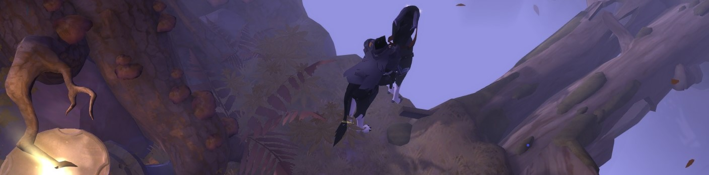
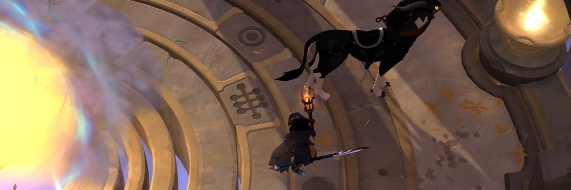

Focused on the Avalonian Roads and the Black Zone.
We are recruiting!
The Elders Night Watch

TENW is an Albion Online PVP Guild. We are
focusing on smallscale PVP on the Avalonian Roads and in the Black
Zone, based out of Martlock.
We have regular Fame Farm events and daily Groups roaming around!
Our Goal is to be a known Group of PVP Players and enjoy the thrilling pvp that Albion Online offers!
You can check out our Killboard here:
Want to join us?
What we offer:
Friendly and helpfull Community of Veterans and Beginners.
A Hideout on the Avalonian Roads to make money, skill up or roam.
An active Community (Daily content!).
What we expect from you:
Be able to speak and understand english!
Be mature and an asset to our community!
Use our Discord (mandatory to be on voicecomms when online!).
We are looking for active Players with a focus on PVP. You dont need
to have a lot of experience, as long as you are willing to put in
the effort to learn and get better.
We expect you to skill up for the required builds and play the roles and builds we need to be successfull.
How to Join
Join our Discordserver, change your Nickname to the exact Ingamename and ask for a Recruiter!
Links
You will find some good resources here on this list.
Contact Us!

We use Discord as our Voice- and Chatprogram.
Make sure to change your Username to the matching Name in Albion online!